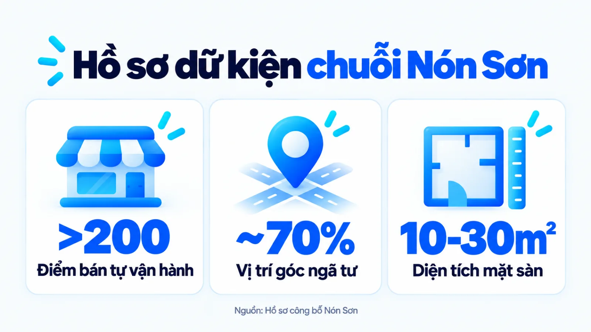
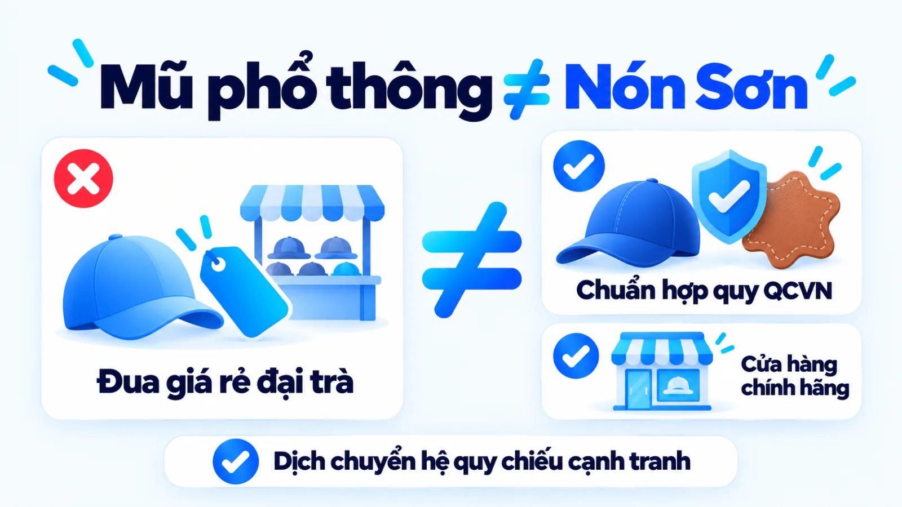
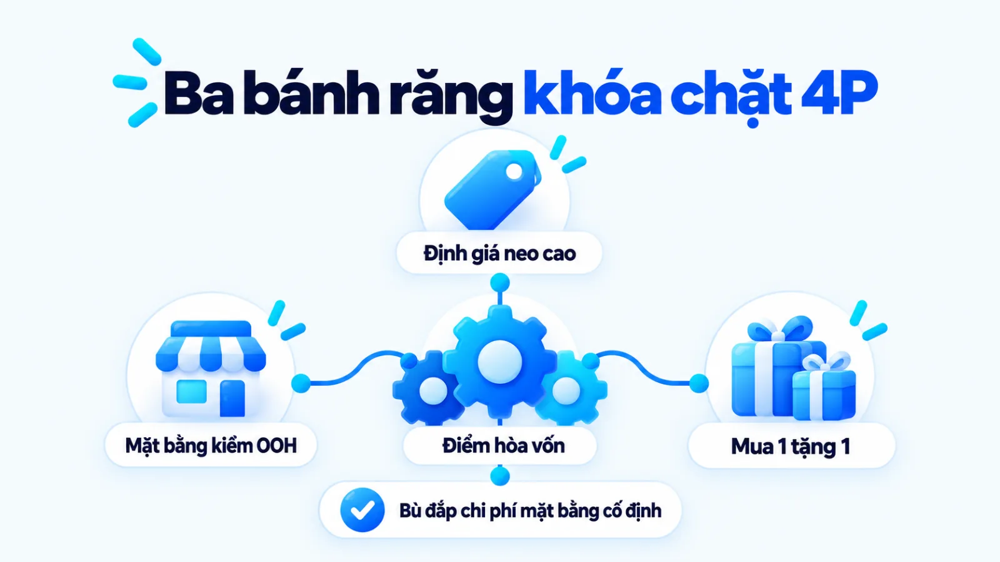
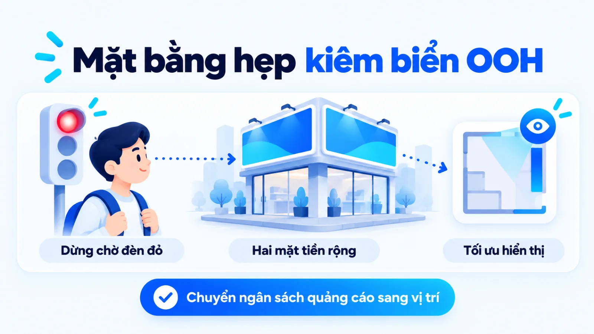
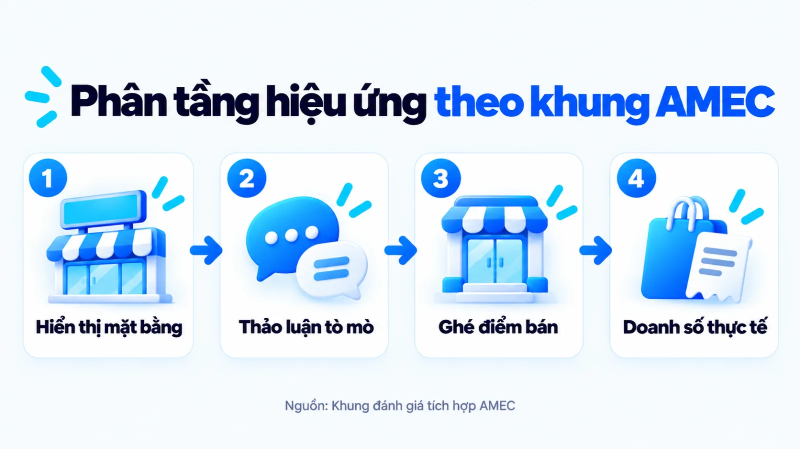
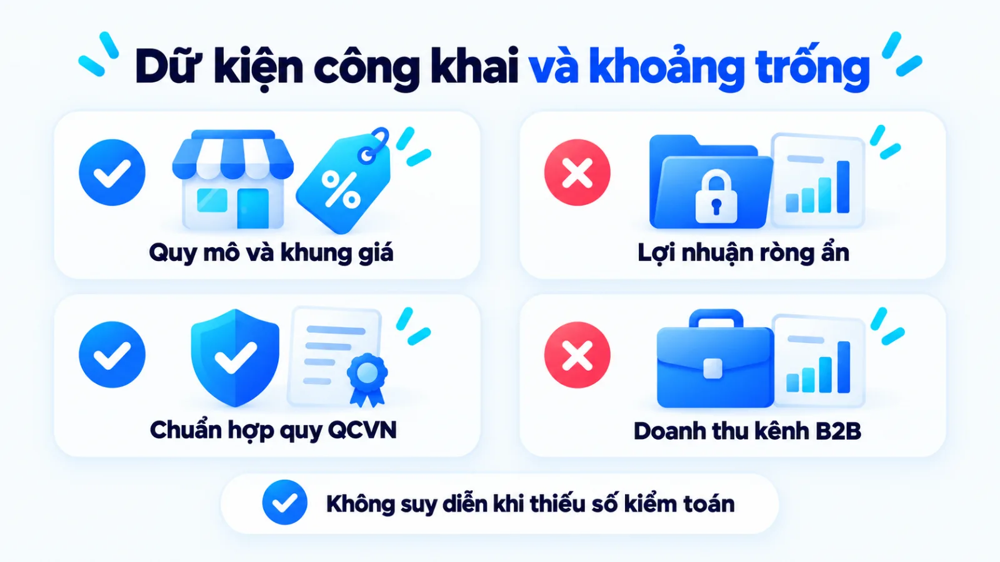
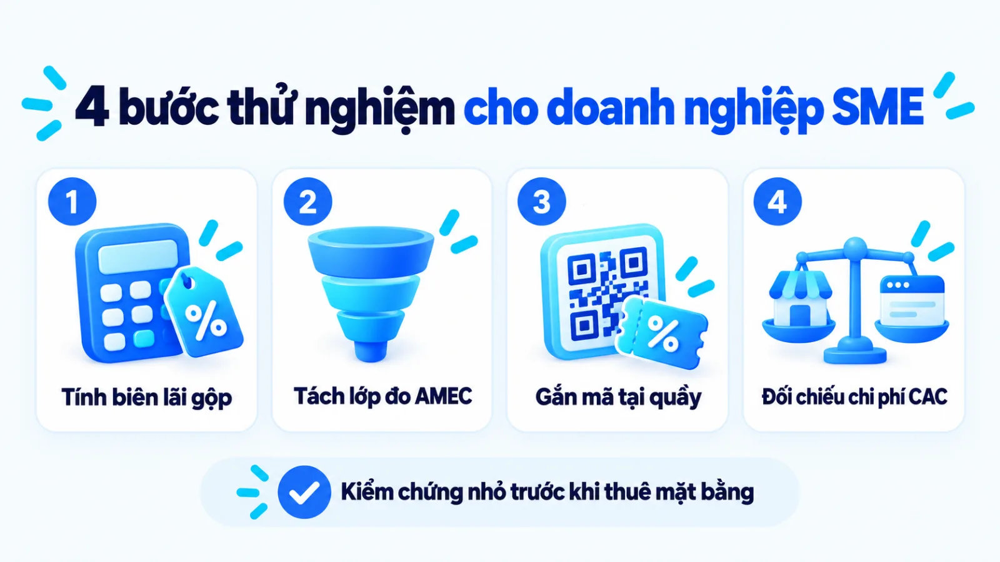

Chiến lược marketing của Nón Sơn: nghịch lý 4P
Chiến lược marketing của Nón Sơn là trường hợp thương hiệu bán lẻ phụ kiện thay thế ngân sách quảng cáo đại chúng bằng mạng lưới mặt bằng ngã tư diện tích nhỏ, dựa trên biên lợi nhuận gộp cao và khuyến mãi mua kèm. Khi quan sát chuỗi cửa hàng màu hồng tại các giao lộ lớn nhưng bên trong thưa khách, góc nhìn bề nổi theo lưu lượng ghé thăm mỗi giờ rất dễ bỏ sót bài toán chuyển chi phí quảng cáo sang vị trí hiển thị trực tiếp. Vì vậy, điều người làm nghề cần tháo gỡ là các quyết định về sản phẩm, giá bán, điểm bán và khuyến mãi đã khóa chặt vào nhau theo cơ chế tài chính nào. Tôi là Lê Tuấn Việt, Marketing Leader tại TAKI Group. Trong bài viết này, tôi đối chiếu dữ kiện công khai, phân tích cơ chế vận hành bốn trụ cột tiếp thị và xác lập điều kiện áp dụng thực tế cho doanh nghiệp vừa và nhỏ.
- Đăng ngày
- Cập nhật

Tóm tắt nhanh
- Chiến lược marketing của Nón Sơn vận hành như một hệ thống đánh đổi chi phí: cắt giảm ngân sách quảng cáo đại chúng để dồn nguồn lực vào khoảng 70% mặt bằng góc ngã ba, ngã tư có diện tích sàn từ 10 đến 30 mét vuông làm biển hiệu hiển thị trực tiếp.
- Ba trụ cột giữ nhịp dòng tiền tại điểm bán gồm định giá niêm yết cao để tạo biên lợi nhuận gộp dày trên mỗi đơn vị, vị trí giao lộ thu hút thị giác liên tục và chương trình Mua 1 tặng 1 kích thích quy mô giỏ hàng.
- Dữ liệu công khai mới xác nhận quy mô hơn 200 cửa hàng tự vận hành và khung giá niêm yết đến 10 triệu đồng, nhưng chưa có báo cáo tài chính kiểm toán về lợi nhuận ròng từng điểm bán hay tỷ trọng doanh thu quà tặng doanh nghiệp.
- Doanh nghiệp vừa và nhỏ chỉ nên học cách dùng mặt tiền thay quảng cáo khi sản phẩm có biên lợi nhuận gộp cao, nhu cầu mua lặp lại trên tuyến đường mục tiêu và đã tính kỹ điểm hòa vốn theo đơn hàng.
Mục lục bài viết8 phần
Chiến lược marketing của Nón Sơn và hồ sơ dữ kiện
Chiến lược marketing của Nón Sơn là hệ thống các lựa chọn phối hợp trong mô hình 4P (Product là sản phẩm, Price là giá cả, Place là phân phối, Promotion là xúc tiến), sử dụng hơn 200 cửa hàng diện tích nhỏ tại các giao lộ lớn làm kênh hiển thị ngoài trời trực tiếp kết hợp định giá neo cao và khuyến mãi mua kèm để thay thế ngân sách quảng cáo đại chúng.
Hồ sơ dữ kiện công khai tại thị trường Việt Nam
Quy mô mạng lưới điểm bán và định vị sản phẩm của Nón Sơn
Theo thông tin do Công ty TNHH Thời Trang Nón Sơn tự công bố năm 2024 kết hợp hồ sơ trên Wikipedia Tiếng Việt và ghi nhận năm 2023 của CafeF tại Thành phố Hồ Chí Minh cùng Hà Nội, thương hiệu thành lập năm 1996, đặt trụ sở tại 199 Hai Bà Trưng và tự vận hành hơn 200 cửa hàng với khoảng 70% mặt bằng nằm ở góc ngã ba, ngã tư có diện tích từ 10 đến 30 mét vuông.

Bối cảnh thị trường mũ và định vị khác biệt
Thị trường mũ nón tại Việt Nam tồn tại sự phân cực rõ rệt giữa nhóm mũ vải, mũ bảo hiểm giá rẻ bán đại trà trên vỉa hè và nhóm mũ bảo hộ kỹ thuật chuyên dụng. Trong bài phỏng vấn đăng năm 2021 trên tạp chí Forbes Việt Nam, Giám đốc điều hành Nguyễn Ngọc Tý cho biết doanh nghiệp kiên định hướng chuyên môn hóa hoàn toàn vào ngành hàng nón mũ và chấp nhận đầu tư dài hạn cho chất lượng ngay từ giai đoạn khởi đầu.
Để bảo vệ định vị chính hãng trước vấn nạn hàng nhái, dòng mũ bảo hiểm của thương hiệu công bố sử dụng nhựa ABS (Acrylonitrile Butadiene Styrene, loại nhựa nhiệt dẻo có độ bền cơ học và khả năng chịu va đập cao) nguyên sinh nhập khẩu. Theo hướng dẫn thực thi Thông tư số 04/2021/TT-BKHCN công bố năm 2023 của Trung tâm Kỹ thuật Tiêu chuẩn Đo lường Chất lượng 3 (QUATEST 3), kể từ ngày 01/01/2024 mọi mũ bảo hiểm sản xuất và nhập khẩu lưu thông tại Việt Nam đều phải đáp ứng quy chuẩn kỹ thuật quốc gia QCVN 2:2021/BKHCN.
Nghịch lý cửa hàng thưa khách tại mặt bằng ngã tư
Câu hỏi khiến nhiều người làm kinh doanh tò mò là vì sao các điểm bán Nón Sơn nằm ở vị trí đắc địa, bật đèn sáng cùng tông màu hồng nhận diện đặc trưng nhưng bên trong hiếm khi thấy cảnh người mua xếp hàng đông đúc. Nếu đánh giá bằng thước đo của ngành dịch vụ ăn uống hay siêu thị tiện lợi, một mặt bằng góc ngã tư vắng người ra vào thường bị quy kết là hoạt động kém hiệu quả.
Tuy nhiên, đặc thù của sản phẩm mũ nón là vòng đời sử dụng kéo dài và hành vi chọn mua diễn ra nhanh gọn trong vài phút, không đòi hỏi khách phải nán lại trải nghiệm hàng giờ. Đồng thời, dữ liệu hơn 200 cửa hàng do doanh nghiệp tự công bố hiện chưa cho biết tỷ lệ điểm bán có lãi ròng độc lập hay phần doanh thu đến từ kênh quà tặng doanh nghiệp B2B (Business to Business, mô hình giao dịch thương mại giữa doanh nghiệp với doanh nghiệp) và sàn thương mại điện tử.
Khi phân tích một mô hình bán lẻ, tôi ưu tiên đọc cấu trúc chi phí hiển thị và biên lợi nhuận gộp trên từng giao dịch hơn là nhìn cảm tính vào số lượng người đứng trong quầy tại một thời điểm. Một cửa hàng đóng vai trò điểm chạm nhận diện liên tục ở giao lộ hoàn toàn có bài toán tài chính khác hẳn một cửa hàng chỉ sống nhờ lưu lượng khách vãng lai bước vào mỗi giờ.
Hệ tiêu chí cạnh tranh của Nón Sơn và mũ phổ thông
Trong khi nhóm mũ bảo hiểm và mũ vải phổ thông cạnh tranh trực diện bằng mức giá rẻ cùng độ phủ sạp hàng đại trà, chiến lược marketing của Nón Sơn kéo người mua về hệ tiêu chí kết hợp kiểm định an toàn, thiết kế thời trang phối da hoặc đan tay và trải nghiệm thử trực tiếp tại cửa hàng chính hãng theo sáu tiêu chí đối chiếu dưới đây.
Bảng phân tích dưới đây giúp người phụ trách marketing nhìn rõ cách thương hiệu tách khỏi cuộc đua giảm giá thông qua việc thiết lập lại các tiêu chuẩn đánh giá sản phẩm trong tâm trí người mua.
| Tiêu chí cạnh tranh | Nhóm mũ phổ thông đại trà | Hệ tiêu chí của Nón Sơn |
|---|---|---|
| Vật liệu và kiểm định | Nhựa pha tạp hoặc vải thông thường, nguồn gốc kiểm định thiếu đồng nhất giữa các điểm bán lẻ | Nhựa ABS nguyên sinh nhập khẩu, đáp ứng quy chuẩn QCVN 2:2021/BKHCN theo quy định từ năm 2024 |
| Thiết kế và nhận diện | Kiểu dáng cơ bản, ít chi tiết phân biệt thương hiệu khi người đội di chuyển ngoài đường phố | Phối màu hồng đặc trưng, đinh tán, viền da, chất liệu sơn mài hoặc đan tay dễ nhận biết từ xa |
| Phân tầng giá niêm yết | Tập trung ở phân khúc giá thấp để kích thích quyết định mua nhanh không cần cân nhắc nhiều | Trải rộng từ 400.000 đến 1.500.000 đồng ở dòng phổ thông và lên tới 10 triệu đồng ở dòng cao cấp |
| Điểm chạm phân phối | Sạp vỉa hè, cửa hàng phụ kiện tổng hợp hoặc gian hàng trực tuyến cạnh tranh bằng chiết khấu | Hệ thống hơn 200 cửa hàng tự vận hành, khoảng 70% đặt tại góc ngã ba và ngã tư lớn toàn quốc |
| Cơ chế tạo niềm tin | Người mua tự kiểm tra bằng cảm quan cá nhân, ít có cam kết bảo hành phụ kiện sau thanh toán | Mua trực tiếp tại cửa hàng chính hãng để tránh hàng giả, kèm dịch vụ vệ sinh và bảo hành khóa nón |
| Động cơ mua hàng chính | Đối phó quy định đội mũ bảo hiểm hoặc che nắng mưa thuần túy với chi phí ban đầu thấp nhất | Kết hợp nhu cầu bảo vệ an toàn, khẳng định gu thẩm mỹ cá nhân và chọn làm quà tặng lịch sự |
Giới hạn khi đọc bảng: dữ liệu giá niêm yết từ 400.000 đến 1.500.000 đồng cho dòng phổ thông và mức trần 10 triệu đồng cho dòng nón da, đan tay cao cấp là thông tin do Công ty TNHH Thời Trang Nón Sơn tự công bố năm 2024 trên website chính thức. Sự phân hóa tiêu chí này không đồng nghĩa mọi khách hàng đều mua vì biểu tượng thời trang; một bộ phận lớn người tiêu dùng chỉ phát sinh giao dịch khi tận dụng các đợt khuyến mãi mua kèm hoặc cần mua quà biếu tặng.

Cơ chế xoay trục tiêu chí ở đây có thể hình dung qua phép tương tự giữa việc mua một chiếc đồng hồ điện tử xem giờ cơ bản và một chiếc đồng hồ cơ có thiết kế vỏ máy đặc trưng. Phép đối chiếu này chỉ dùng để làm rõ việc tách lớp giá trị biểu tượng khỏi công năng bảo vệ đầu thuần túy, không phải bằng chứng chứng minh người mua hai ngành hàng có cùng động cơ tâm lý. Với SME (Small and Medium Enterprise, tức doanh nghiệp vừa và nhỏ), bài học rút ra là chỉ nâng được mặt bằng giá khi sản phẩm sở hữu các dấu hiệu chất lượng nhìn thấy và kiểm chứng được ngay tại điểm chạm vật lý.
Ba cơ chế vận hành trong chiến lược 4P của Nón Sơn
Mô hình 4P của Nón Sơn vận hành quanh ba cơ chế khóa chặt vào nhau: định giá niêm yết cao để tạo mỏ neo giá trị và biên lợi nhuận gộp dày, thuê mặt bằng ngã tư diện tích hẹp làm biển quảng cáo OOH (Out-of-Home, tức quảng cáo ngoài trời) hiển thị liên tục, và dùng khuyến mãi mua kèm để đẩy giá trị giỏ hàng.
Khác với cách liệt kê bốn chữ P rời rạc thường thấy trong các bài tổng hợp lý thuyết, sức sống của mô hình này nằm ở chỗ quyết định về giá bán và biên lợi nhuận đóng vai trò bệ đỡ tài chính cho quyết định thuê mặt bằng và khuyến mãi. Ba trụ cột cơ chế dưới đây giải thích cách doanh nghiệp cân bằng phương trình thu chi tại từng điểm bán.
- Định giá neo phân tầng: Khung giá niêm yết đến 10 triệu đồng nâng giá trị cảm nhận và tạo biên lợi nhuận gộp dày cho từng đơn hàng.
- Mặt bằng kiêm biển hiệu: Khoảng 70% cửa hàng nằm ở góc giao lộ với diện tích nhỏ giúp tối ưu độ phủ thị giác và định phí thuê.
- Khuyến mãi mua kèm: Ưu đãi Mua 1 tặng 1 giữ nguyên tổng tiền thu về trên mỗi hóa đơn và kích thích khách rủ nhau mua chung.

Cơ chế 1: Định giá neo chất lượng và biên lợi nhuận
Trong tâm lý học hành vi tiêu dùng, hiệu ứng mỏ neo xảy ra khi người mua dựa vào thông tin mức giá đầu tiên nhìn thấy để đánh giá xem một món hàng là đắt hay hời ở bước tiếp theo. Theo dữ liệu do doanh nghiệp tự công bố năm 2024 trên website chính thức, việc đặt các mẫu nón da, nón đan tay thủ công ở mức giá lên tới 10 triệu đồng cạnh nhóm mũ bảo hiểm và nón kết phổ thông từ 400.000 đến 1.500.000 đồng giúp kéo mặt bằng giá trị cảm nhận của toàn bộ thương hiệu đi lên.
Về mặt quản trị tài chính, chính khoảng chênh lệch giữa giá vốn sản xuất công nghiệp theo quy mô lớn và mức giá bán lẻ niêm yết đã tạo ra biên lợi nhuận gộp dày trên từng chiếc nón. Nhờ biên lợi nhuận trên mỗi đơn hàng cao, một cửa hàng không cần phục vụ hàng trăm lượt khách mỗi ngày như quán ăn bình dân mà chỉ cần một số lượng giao dịch thành công vừa đủ để trang trải chi phí nhân sự và tiền thuê mặt bằng hàng tháng.
Cơ chế 2: Mặt bằng ngã tư kiêm biển quảng cáo OOH
Nếu cắt bớt ngân sách quảng cáo truyền hình và truyền thông đại chúng, thương hiệu lấy gì để duy trì độ nhận biết trong tâm trí người đi đường? Câu trả lời nằm ở cấu trúc bất động sản bán lẻ được CafeF ghi nhận năm 2023 và Wikipedia Tiếng Việt tổng hợp năm 2024: khoảng 70% trong tổng số hơn 200 cửa hàng Nón Sơn nằm tại các góc ngã ba, ngã tư hoặc vòng xoay giao thông lớn, nhưng diện tích mặt sàn bên trong chỉ rộng khoảng 10 đến 30 mét vuông.
Ở góc độ truyền thông, mỗi cửa hàng góc giao lộ được sơn phủ màu hồng cánh sen đồng nhất và thắp sáng rực rỡ vào buổi tối chính là một biển quảng cáo ngoài trời sở hữu riêng tại điểm dừng đèn đỏ. Khi người điều khiển xe máy dừng chờ đèn tín hiệu từ hai đến ba hướng đường, họ tiếp xúc trực diện với thương hiệu và sản phẩm thật trưng bày sau lớp kính. Cách chọn diện tích hẹp từ 10 đến 30 mét vuông nhưng lấy trọn hai mặt tiền giúp hãng tối đa hóa diện tích hiển thị thị giác trong khi giữ tổng chi phí thuê hàng tháng thấp hơn nhiều so với việc thuê các mặt bằng diện tích sàn rộng hàng trăm mét vuông.
Cơ chế 3: Khuyến mãi mua kèm kích thích giỏ hàng
Mảnh ghép thứ ba khóa chặt bài toán chuyển đổi tại điểm bán là các tấm biển chương trình Mua 1 tặng 1 được duy trì thường xuyên như ghi nhận năm 2023 trên CafeF. Với một người mua đang lưỡng lự trước mức giá niêm yết hơn một triệu đồng cho một chiếc nón kết hoặc mũ bảo hiểm, ưu đãi nhận về hai sản phẩm với cùng số tiền chi trả tạo ra cảm giác chi phí bình quân trên mỗi chiếc giảm đi một nửa.
Đối với doanh nghiệp, cơ chế Mua 1 tặng 1 mang lại lợi thế vận hành rõ rệt so với việc treo biển giảm giá trực tiếp 50% cho từng sản phẩm lẻ. Hãng vừa thu về trọn vẹn giá trị hóa đơn ban đầu để bảo đảm dòng tiền, vừa giải phóng nhanh lượng hàng tồn kho theo mùa và biến chiếc nón tặng thêm thành một vật phẩm quảng bá di động trên đường phố. Khi đối chiếu với cách bảo vệ mặt bằng giá trong chiến lược marketing của Apple, có thể thấy mọi chính sách ưu đãi mua kèm chỉ phát huy tác dụng khi giá vốn hàng bán chiếm tỷ trọng nhỏ trong giá niêm yết và thương hiệu kiểm soát được toàn bộ hệ thống phân phối trực tiếp.
Giới hạn cần lưu ý ở mục này là hiện chưa có dữ liệu công khai kiểm chứng biên lợi nhuận ròng sau khi trừ chi phí mặt bằng hay tỷ lệ khách mua nguyên giá so với khách mua qua chương trình khuyến mãi. Ngoài ra, khả năng duy trì mạng lưới điểm bán ngã tư suốt nhiều năm còn có thể đến từ lợi thế ký hợp đồng thuê mặt bằng dài hạn từ những giai đoạn giá bất động sản thương mại chưa tăng cao.

Tín hiệu bề nổi và lựa chọn chiến lược của Nón Sơn
Những cuộc thảo luận tự nhiên trên mạng xã hội xoay quanh câu hỏi vì sao cửa hàng Nón Sơn vắng khách vẫn hoạt động đã tạo ra lượng truyền thông lan truyền miễn phí, củng cố độ nhận biết cho hệ thống hơn 200 điểm bán sở hữu mà không cần chi ngân sách lớn cho quảng cáo đại chúng.
Để phân tích hiện tượng này một cách khoa học, người làm nghề có thể áp dụng khung đánh giá tích hợp công bố năm 2024 của Hiệp hội Quốc tế về Đo lường và Đánh giá Truyền thông (AMEC). Khung AMEC yêu cầu phân biệt bốn nhóm kênh PESO (Paid là kênh trả phí, Earned là kênh lan truyền tự nhiên, Shared là kênh chia sẻ xã hội, Owned là kênh sở hữu riêng) và tách bạch bốn tầng chỉ số từ độ phủ đầu ra (Outputs), phản ứng chú ý (Out-takes), thay đổi hành vi (Outcomes) đến tác động kinh doanh thực chất (Impact).
Hiệu ứng truyền miệng tự nhiên từ sự tò mò
Sự tương phản giữa vị trí mặt bằng góc ngã tư đắt đỏ và không gian bán hàng tĩnh lặng bên trong đã kích hoạt phản ứng chú ý và tò mò tự nhiên (Out-takes) của công chúng đô thị. Định kỳ hàng năm, các chủ đề bàn luận hoặc phỏng đoán về mô hình kinh doanh của hãng lại xuất hiện trên các diễn đàn và trang mạng xã hội, tạo nên làn sóng chia sẻ tự nhiên (Shared và Earned Media) có độ phủ rộng mà doanh nghiệp không tốn chi phí mua lượt hiển thị.
Phần lớn các cuộc trò chuyện tiếp nối sau đó diễn ra trong tin nhắn riêng tư, hội nhóm kín hoặc lời rủ nhau đi mua chung của đồng nghiệp khi thấy bảng khuyến mãi, vốn là những điểm chạm ẩn rất khó đo đếm bằng công cụ theo dõi thông thường tương tự hiện tượng dark social trong môi trường số. Điểm đáng chú ý trong lựa chọn chiến lược của Nón Sơn là hãng không chạy theo các cuộc tranh luận giật gân trên mạng, mà giữ thông điệp chính thống trên website và tại cửa hàng xoay quanh chất lượng kiểm định cùng cách phân biệt hàng thật, hàng giả.

Đánh đổi giữa chi phí thuê mặt bằng và quảng cáo số
Việc tự vận hành toàn bộ chuỗi hơn 200 cửa hàng mà không nhượng quyền giúp thương hiệu kiểm soát tuyệt đối cách trưng bày, mức giá bán và trải nghiệm khách hàng, nhưng đòi hỏi nguồn vốn lưu động lớn cùng năng lực quản trị chuỗi cung ứng tập trung. Với các doanh nghiệp quy mô nhỏ hơn, việc nhìn vào bề nổi mặt bằng ngã tư rồi cắt bỏ hoàn toàn ngân sách chiến lược digital marketing để thuê điểm bán lớn rất dễ dẫn tới đứt gãy dòng tiền.
Ví dụ biên tập, không phải kết quả khách hàng thật
Đối chiếu hai cách phân bổ ngân sách giữa mặt bằng vật lý và kênh số
Một xưởng phụ kiện da thủ công tại địa phương cắt toàn bộ ngân sách quảng cáo số để thuê mặt bằng ngã tư diện tích lớn, nhưng biên lợi nhuận mỏng và ít mẫu mã khiến điểm bán âm dòng tiền. Ngược lại, trong ví dụ biên tập này, phương án phù hợp là giữ quầy trưng bày nhỏ vừa đủ thử hàng và duy trì quảng cáo tìm kiếm nhắm đúng tệp khách mua quà tặng.
Giới hạn bằng chứng cần gạch chân là độ phủ thảo luận sôi nổi trên mạng xã hội (Shared Outputs) không tự động chuyển hóa thành doanh số bán lẻ tại quầy (Impact). Khi chưa có dữ liệu nội bộ, người phân tích cần tính đến khả năng doanh thu bền vững của hãng dựa nhiều vào tệp khách hàng trung thành lâu năm, mảng gia công đơn hàng doanh nghiệp và mạng lưới phân phối trực tuyến hơn là chỉ nhờ sự tò mò của người đi đường.
Bằng chứng xác nhận và giới hạn dữ liệu công khai
Các nguồn chính thức và báo chí kinh tế mới xác nhận quy mô hơn 200 cửa hàng, tỷ trọng khoảng 70% mặt bằng ngã tư diện tích 10 đến 30 mét vuông và khung giá niêm yết tới 10 triệu đồng của Nón Sơn, nhưng chưa có báo cáo tài chính kiểm toán công khai về doanh thu ròng, biên lợi nhuận hay cơ cấu doanh số theo kênh.
Trong quá trình lập kế hoạch marketing dựa trên việc học hỏi các mô hình thành công trên thị trường, rủi ro lớn nhất là lấy phần suy diễn cơ chế bên ngoài làm dữ kiện tài chính đã được chứng minh. Bảng đối chiếu ba cột dưới đây tách bạch rõ những thông số đã có nguồn xác nhận với phần diễn giải nghiệp vụ và các khoảng trống dữ liệu chưa được công bố.
| Dữ kiện nguồn xác nhận | Diễn giải cơ chế trong bài | Giới hạn và khả năng khác |
|---|---|---|
| Hơn 200 cửa hàng (2024) | Mạng lưới tự vận hành giúp đồng bộ nhận diện màu hồng, kiểm soát giá bán và ngăn hàng giả | Số do doanh nghiệp tự công bố, chưa có báo cáo kiểm toán về tỷ lệ cửa hàng đạt điểm hòa vốn |
| Khoảng 70% ở ngã tư (2024) | Vị trí góc giao lộ hoạt động như biển quảng cáo OOH sở hữu riêng tại các nút dừng đèn giao thông | Tổng hợp từ báo chí kinh tế, chưa có số đo lưu lượng người nhìn thấy chuyển đổi thành người mua |
| Diện tích 10 đến 30m2 (2023) | Thuê mặt sàn hẹp để giữ mặt tiền hiển thị lớn nhưng khống chế định phí thuê mặt bằng hàng tháng | Ghi nhận thực tế tại đô thị lớn trên CafeF, chi phí thực tế còn phụ thuộc hợp đồng thuê dài hạn cũ |
| Giá tới 10 triệu đồng (2024) | Dòng cao cấp tạo mỏ neo chất lượng và biên lợi nhuận gộp dày cho nhóm phổ thông từ 400.000 đồng | Khung giá niêm yết trên website, chưa phản ánh giá bán thực thu bình quân sau khi trừ khuyến mãi |
| Mua 1 tặng 1 (2023) | Bảo vệ giá trị thanh toán trên mỗi hóa đơn, tăng lượng hàng xuất kho và kích thích mua chung | Chưa có số liệu tỷ trọng khách mua theo chương trình khuyến mãi so với khách mua lẻ nguyên giá |
| Chuẩn QCVN 2:2021/BKHCN | Nhựa ABS nguyên sinh và kiểm định hợp quy từ năm 2024 tạo nền tảng pháp lý và niềm tin an toàn | Quy chuẩn bắt buộc chung cho toàn ngành mũ bảo hiểm tại Việt Nam, không phải lợi thế độc quyền |
Giới hạn khi đọc bảng: Công ty TNHH Thời Trang Nón Sơn là doanh nghiệp tư nhân không niêm yết trên sàn chứng khoán nên không có nghĩa vụ công bố báo cáo tài chính định kỳ ra công chúng. Mọi con số về tổng doanh thu, biên lợi nhuận ròng, lưu lượng khách ghé thăm mỗi giờ (foot traffic) hay tỷ trọng đóng góp giữa kênh bán lẻ mặt phố với kênh đơn hàng doanh nghiệp B2B xuất hiện trong các lời đồn đoán trên mạng xã hội đều chưa được xác nhận. Người làm nghề chỉ nên trích xuất logic phối hợp giữa các biến số chi phí, tuyệt đối không lấy cảm quan mặt bằng để suy đoán kết quả lãi lỗ của doanh nghiệp.

Áp dụng chiến lược marketing của Nón Sơn cho SME
Doanh nghiệp vừa và nhỏ chỉ nên áp dụng cơ chế mặt bằng kiêm biển hiệu và khuyến mãi mua kèm từ chiến lược marketing của Nón Sơn khi sản phẩm có biên lợi nhuận gộp đủ bù chi phí hàng tặng, nhu cầu mua lặp lại trên tuyến đường mục tiêu và diện tích thuê được tối ưu ở mức tối thiểu.
Bảng chuyển giao có điều kiện dưới đây giúp chủ doanh nghiệp và người phụ trách marketing đối chiếu từng bài học cơ chế với điều kiện nguồn lực nội tại, nhận diện sớm các trường hợp đảo chiều và chọn bài thử nghiệm quy mô nhỏ trước khi ký hợp đồng thuê mặt bằng dài hạn.
| Bài học cơ chế | Điều kiện phù hợp và ngoại lệ | Việc thử nhỏ và tín hiệu đo |
|---|---|---|
| Mặt tiền kiêm biển OOH | Hợp hàng tiêu dùng cá nhân dễ trưng bày; đảo chiều với dịch vụ B2B hoặc phần mềm cần tư vấn sâu | Tối ưu lại bảng hiệu điểm bán hiện có và đo số khách vãng lai bước vào quầy trong 30 ngày |
| Thuê sàn hẹp ở giao lộ | Hợp sản phẩm nhỏ gọn, khách thử nhanh dưới 15 phút; đảo chiều với mô hình cần chỗ ngồi lưu trú lâu | Cắt giảm diện tích trưng bày dư thừa tại một điểm bán để tính lại doanh thu trên mỗi mét vuông |
| Định giá neo phân tầng | Hợp khi dòng cao cấp có chất liệu khác biệt nhìn thấy ngay; đảo chiều với hàng hóa đồng nhất đại trà | Đặt một mẫu cao cấp cạnh dòng chủ lực trên kệ và theo dõi tỷ lệ khách chọn phân khúc giữa |
| Khuyến mãi Mua 1 tặng 1 | Hợp khi tỷ trọng giá vốn thấp và có sẵn tồn kho; đảo chiều khi biên lợi nhuận gộp mỏng dưới mức tặng | Chạy thử gói mua kèm theo cặp trong 2 tuần và đối chiếu lợi nhuận ròng trên mỗi hóa đơn |
| Tự vận hành điểm chạm | Hợp khi cần bảo vệ uy tín chống hàng giả; đảo chiều khi thiếu vốn lưu động và đội ngũ quản lý chuỗi | Chuẩn hóa quy trình tư vấn tại 1 đến 2 cửa hàng trực tiếp trước khi tính chuyện mở điểm mới |
Giới hạn khi đọc bảng: các bài thử nghiệm trên chỉ đo lường phản ứng ngắn hạn tại một điểm chạm đơn lẻ. Để ra quyết định mở rộng mạng lưới vật lý, doanh nghiệp bắt buộc phải đặt chi phí mặt bằng cạnh chi phí chuyển đổi trên các kênh marketing bán hàng online trong cùng một kỳ đo để chọn cấu trúc kênh có lợi suất vốn tốt nhất.

Điều kiện áp dụng và ngoại lệ đảo chiều cần tránh
Không phải mô hình kinh doanh nào cũng có thể biến tiền thuê mặt bằng thành chi phí quảng cáo. Với các ngành hàng dịch vụ tư vấn chuyên sâu, giải pháp công nghệ B2B, thiết bị y tế hoặc sản phẩm có biên lợi nhuận gộp mỏng, khách hàng mục tiêu không ra quyết định mua chỉ vì nhìn thấy biển hiệu màu sắc bắt mắt lúc dừng đèn đỏ. Khi hành trình mua đòi hỏi tìm kiếm thông tin, đọc tài liệu so sánh và kiểm chứng năng lực nhà cung cấp, việc đầu tư vào hệ thống content marketing và hiện diện trên công cụ tìm kiếm sẽ giải quyết đúng điểm nghẽn niềm tin hơn là thuê mặt bằng ngã tư.
Các bước thử nghiệm nhỏ và chỉ số kiểm chứng
Trước khi quyết định dịch chuyển ngân sách từ kênh quảng cáo trả phí sang nâng cấp mặt tiền điểm bán hoặc tung chương trình khuyến mãi mua kèm, đội ngũ marketing tại doanh nghiệp vừa và nhỏ nên thực hiện bốn bước kiểm tra thực nghiệm dưới đây để khóa rủi ro dòng tiền:
- Tính lại biên lợi nhuận gộp sau khuyến mãi: Lấy giá bán niêm yết trừ đi giá vốn của cả sản phẩm chính lẫn sản phẩm tặng kèm cùng chi phí vận hành trên mỗi đơn hàng để xác định ngưỡng hòa vốn tối thiểu trước khi treo biển ưu đãi.
- Tách lớp đo lường điểm chạm vật lý theo khung AMEC: Ước tính lưu lượng phương tiện qua lại trước cửa hàng (Outputs), theo dõi biến động lượt tìm kiếm tên thương hiệu tự nhiên trên Google tại khu vực đó (Out-takes) và đếm số khách thực tế bước vào hỏi mua (Outcomes).
- Gắn mã định danh riêng cho khách vãng lai tại điểm bán: Đặt một mã ưu đãi hoặc mã quét nhận quà bảo hành chỉ hiển thị trên biển hiệu mặt tiền trong một chu kỳ thử nghiệm ngắn hạn để tách bạch khách mới nhìn thấy cửa hàng với khách quen cũ.
- Đối chiếu chi phí thu hút khách hàng giữa hai kênh: Chia phần chi phí tăng thêm cho mặt tiền và biển hiệu cho số lượng khách hàng mới thu được tại quầy, sau đó đặt cạnh chi phí trên mỗi khách hàng mua thành công từ quảng cáo số để quyết định tỷ lệ phân bổ ngân sách.
Muốn đổi kênh thì phải đo điểm hòa vốn trước.
Câu hỏi thường gặp về chiến lược marketing của Nón Sơn
Vì sao Nón Sơn không mở rộng bằng mô hình nhượng quyền?
Không mở rộng qua nhượng quyền là lựa chọn nhằm bảo toàn tiêu chuẩn vận hành và uy tín hàng chính hãng trên toàn chuỗi. Việc tự đầu tư và quản lý trực tiếp hơn 200 điểm bán giúp doanh nghiệp kiểm soát đồng bộ nhận diện mặt tiền màu hồng, chất lượng tư vấn và ngăn chặn rủi ro trà trộn hàng giả ngay trong hệ thống. Với ngành hàng phụ kiện thời trang có biên lợi nhuận phụ thuộc lớn vào niềm tin thương hiệu, quyền điều hành tập trung còn giúp hãng điều phối tồn kho và áp dụng khuyến mãi tức thì trên toàn quốc.
Cửa hàng Nón Sơn diện tích nhỏ giải quyết bài toán gì?
Thuê diện tích mặt sàn nhỏ từ 10 đến 30 mét vuông tại góc giao lộ giúp Nón Sơn sở hữu trọn vẹn hai mặt tiền hiển thị rộng như biển quảng cáo ngoài trời nhưng giữ định phí thuê hàng tháng ở mức kiểm soát được. Do đặc thù mũ bảo hiểm và nón thời trang có kích thước nhỏ gọn, khách chỉ cần thử nhanh tại quầy mà không đòi hỏi không gian lưu trú lâu. Nhờ đó, doanh nghiệp tối ưu hóa chi phí trên mỗi mét vuông hiển thị thay vì trả tiền cho diện tích sàn trống bên trong.
Nón Sơn duy trì doanh thu ngoài kênh bán lẻ từ đâu?
Ngoài nguồn thu trực tiếp tại mạng lưới hơn 200 cửa hàng vật lý, doanh nghiệp còn khai thác các đơn hàng sản xuất mũ bảo hiểm làm quà tặng doanh nghiệp, bán sỉ và phân phối qua kênh thương mại điện tử. Các đơn hàng tổ chức số lượng lớn giúp nhà máy duy trì công suất sản xuất ổn định và bù đắp chi phí cố định theo mùa vụ. Tuy nhiên, tỷ trọng đóng góp cụ thể của từng kênh hiện chưa được Công ty TNHH Thời Trang Nón Sơn công bố trong báo cáo tài chính kiểm toán.
Khuyến mãi mua 1 tặng 1 khác gì giảm giá 50% một chiếc?
Chương trình Mua 1 tặng 1 giữ nguyên tổng số tiền thu về trên mỗi giao dịch và đẩy lượng sản phẩm xuất kho tăng gấp đôi, trong khi giảm giá một nửa làm sụt giảm trực tiếp doanh thu trên từng khách mua lẻ. Cơ chế tặng kèm vừa bảo vệ được mức giá niêm yết làm mỏ neo nhận thức chất lượng, vừa kích thích người mua rủ bạn bè mua chung hoặc chọn thêm sản phẩm làm quà. Cách làm này chỉ bền vững khi tỷ trọng giá vốn sản xuất trên giá niêm yết đủ thấp để hấp thụ phần hàng tặng kèm.
Cách đo hiệu quả biển hiệu cửa hàng khi không chạy quảng cáo?
Doanh nghiệp có thể vận dụng khung đo lường AMEC để tách lớp từ độ phủ hiển thị tại giao lộ, lượng tìm kiếm tên thương hiệu tự nhiên trên công cụ tìm kiếm đến số lượt khách thực sự bước vào quầy. Để quy kết chính xác hơn phần đóng góp của mặt tiền, điểm bán nên gắn mã ưu đãi hoặc mã phản hồi nhanh riêng trên biển hiệu và kết hợp câu hỏi khảo sát ngắn khi khách thanh toán. Cách đo này giúp tách bạch khách vãng lai nhìn thấy cửa hàng với khách cũ quay lại mua lặp.
Ngành hàng nào không nên học cách thuê mặt bằng ngã tư?
Không nên áp dụng mô hình dồn ngân sách vào mặt bằng ngã tư cho các doanh nghiệp cung cấp giải pháp doanh nghiệp chuyên sâu, phần mềm, dịch vụ tư vấn hoặc mặt hàng có biên lợi nhuận gộp mỏng dưới mức chi phí khuyến mãi. Khi khách hàng mục tiêu cần tra cứu thông số kỹ thuật, đọc đánh giá chi tiết và so sánh nhiều nhà cung cấp trước khi quyết định, biển hiệu tại ngã tư không thể giải quyết trọn vẹn rào cản niềm tin. Trong điều kiện đó, đầu tư vào nội dung chuyên môn và kênh tìm kiếm số mang lại tỷ lệ chuyển đổi thực chất hơn nhiều.
Kết luận
Nghịch lý hệ thống cửa hàng Nón Sơn nhìn thưa khách nhưng vẫn duy trì hơn 200 điểm bán trên toàn quốc thực chất là kết quả của một cấu trúc 4P khóa chặt vào nhau: dùng mặt sàn nhỏ từ 10 đến 30 mét vuông tại các ngã tư lớn làm biển quảng cáo ngoài trời sở hữu riêng, kết hợp định giá neo cao tạo biên lợi nhuận gộp dày và chương trình Mua 1 tặng 1 để tối ưu doanh thu trên mỗi hóa đơn.
Ngay trong tuần này, bạn có thể lấy bảng kê chi phí của một điểm bán hoặc một nhóm sản phẩm chủ lực ra để tính lại hai con số: biên lợi nhuận gộp thực nhận sau khi trừ đi mọi quà tặng khuyến mãi và chi phí mặt bằng quy đổi trên mỗi đơn hàng phát sinh từ khách vãng lai. Để xem thêm cách mổ xẻ các bài toán thực tế khác theo cùng phương pháp tách bạch dữ kiện với diễn giải, bạn có thể tham khảo tại chuyên mục Dự án và bài học trên website.
Khi doanh nghiệp đang vận hành đồng thời cả điểm bán vật lý lẫn các kênh tiếp thị trực tuyến nhưng chưa xác định được khâu nào thực sự mang lại khách hàng có lãi, việc chỉ sửa lẻ tẻ một tấm biển hiệu hay một mẫu quảng cáo sẽ không giải quyết được bài toán hiệu suất tổng thể mà cần một khung hoạch định và đo lường đồng bộ trên toàn hệ thống.
Doanh nghiệp của bạn đang phân bổ ngân sách giữa chi phí mặt bằng điểm bán và chi phí quảng cáo truyền thông số theo tiêu chí kiểm chứng nào?